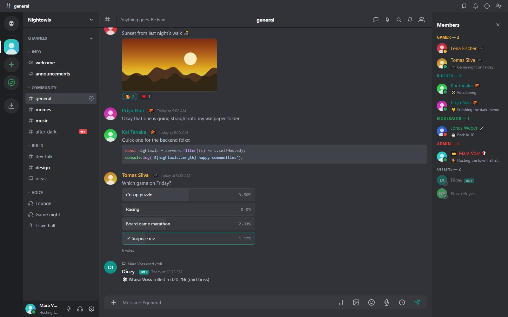

Getting started
A ten-minute tour: start a server, create an account, make your first server and invite someone.
This page takes you from nothing to a running community. Every step links to a deeper page.
What you need
- A computer that stays on while people use it: a spare PC, a small server or a rented VPS.
- On Windows, nothing else. The server bundle carries its own Node.js. On Linux and macOS, install Node.js 22.5 or newer.
- A modern browser.
1. Start the server
On Windows, unzip the server bundle and double-click start-server.bat. On Linux or macOS:
npm install
npm startThe first start creates a data/ folder with the database, a configuration file and a self-signed certificate. See Installation for the portable bundle and updates.
2. Open it and create the owner account
Open https://localhost:8443 and accept the certificate warning once. The warning is expected: the certificate was generated by your own server. Register an account. The first account becomes the Owner with full administrator rights.

3. Create your first server
Click the green + in the left rail and choose Create server. Give it a name. You get a general text channel to begin with. Use the + next to Channels to add more, and the server name at the top to open Server Settings.
If someone shared a template code with you, paste it into the Template code field when creating the server to start from their structure. See Community tools.
4. Invite people
Open Server Settings, Invites, create an invite and send the link (Copy link gives an address like https://192.168.1.10:8443/i/<code> that opens a join page; the plain code still works in the Join tab). People on the same network can use your LAN address. For people outside your network you will want a domain name and a proper certificate: see TLS and reverse proxies.
If other devices will connect, set publicHost in data/config.json to the address people will type before the first start, so the certificate is issued for it. Changing it later means deleting data/certs/ and restarting.
5. Add a voice channel
Create a channel of type Voice. Pick a quality preset now: it is fixed once the channel exists. Join from the sidebar and allow microphone access. Calls need HTTPS or localhost. See Voice, video and stages.
6. Pick your clients
- Browser: nothing to install.
- Desktop app: a portable Windows client. See Clients.
- Android: see the Android app guide.
Where to go next
- Learn how permissions work in Servers, channels and roles.
- Protect your community with Moderation and safety.
- Automate things with Bots, API and webhooks.
- Back up with a single folder copy: Administration.